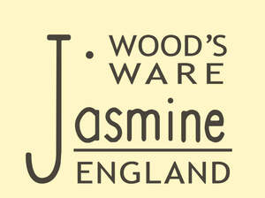

Trade Mark Journal No.2025/022 30 May 2025
UK00004177724 22 March 2025 (16,18,21,24,25)

- Class 16
- Graphic prints; Printed stationery; Disposable napkins; Paper table napkins; Paper stationery; Note books; Note cards; Recipe books; Blank journal books; Gift books; Gift cards; Gift wrap cards; Gift paper; Cards; Greeting cards; Gift tags; Paper gift tags; Gift wrap; Printed recipe cards; Wrapping paper; Gift wrapping paper; Decorative wrappingpaper; Paper gift wrap; Posters; Christmas cards; Christmas gift wrap; Birthdaycards; Pen and pencil boxes; Pencils; Pens; Bookmarks.
- Class 18
- Bags; Tote bags; Canvas bags; Drawstring bags; Cloth bags; Make-up bags; Cosmetic bags; Makeup bags; Travelling bags; Umbrellas; Wash bags for carrying toiletries.
- Class 21
- Oven gloves; Oven mitts; Kitchen mitts; Pottery; Ceramic tableware; Ornaments made of ceramics; Ceramic ornaments; Ceramics for kitchen use; Mugs made of ceramic materials; Ceramic mugs; Earthenware; Earthenware mugs; Trays [household]; Boxes for biscuits; Muffin tins; Baking tins; Cake tins; Pie tins; Roasting tins; Storage tins; Cookie jars; Jars; Enamelled boxes; Enamelled jars; Enamel boxes; Boxes for sweets; Utensil jars; Cake trays; Tea canisters; Kitchen jars; Earthenware jars; Spice jars; Plates; Table plates; Mixing bowls; Vases; Flower vases; Tea cups; Tea pots; Drip mats for tea; Milk jugs; Serving platters; Serving dishes; Serving bowls; Serving pots; Serving trays; Serving spoons; Serving ladles; Serving forks; Mugs made of earthenware; Coasters (tableware); Travel mugs; Tablemats, not of paper or textile; Crockery; Tableware; Mugs; Cups and mugs; Mug cosies; Teapots; Cups made of earthenware; Tea cosies; Household or kitchen containers; Kitchen utensils; Earthenware floor vases; Household or kitchen utensils; Cooking utensils; Tea services in the nature of tableware; Gardening gloves; Dessert plates; Bowls; Soup bowls; Salad bowls; Sugar bowls; Pet feeding bowls; Soup tureens; Colanders; Candle jars [holders]; Bread boxes; Ceramic coin boxes; Cookware [pots and pans]; Dishcloths; Ironing board covers; Chopping boards; Pastry boards; Barbecue mitts; Oven heat resistant pads; Egg cups; Saucers; Jugs; Syrup jugs; Cream jugs; Toby jugs; Reusable stainless steel water bottlesFlower pot holders; Pepper pots; Salt and pepper shakers; Pepper grinders; Dispensers for salt; Gravy boats; Fruit bowls; Mixing spoons [kitchen utensils]; Cake pans; Cake stands; Cookie [biscuit] cutters; Canister sets; Biodegradable cups; Bread boards; Cheese boards.
- Class 24
- Tea towels; Table napkins of textile; Towels; Table cloths; Cushion covers; Travelling rugs; Bed linen and blankets; Hand towels; Textile face towels; Face towels; Face cloths of towelling; Fabric table runners; Kitchen towels; Table mats (not of paper).
- Class 25
- Aprons.
Spice Larder Ltd